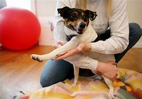

Street animals need our protection.Help them today.
Every year we rescue more than 15,000 injured animals in Udaipur, India.
Our mission is to rescue and treat owner-less street animals of Udaipur who have become ill or injured, and through their rescue inspire the community to care for the lives of all animals.
Help when it's needed most
Throughout India, animals including dogs, cows, cats and donkeys live on the streets. Most cities don't have hospitals for owner-less animals, which means injured or ill animals often die from treatable conditions. But in Udaipur, a call to our helpline
saves a life.
How we save street animals' lives
Every day we save animals with fractures, wounds, mange, viral diseases, cancer, and much more. We vaccinate against rabies and other illnesses, conduct spay and neuter and educate the community about helping animals.
Visit or volunteer in our animal shelter
Volunteers are a life-sustaining force that enables us to give the best care to the most animals. We conduct 4 daily tours to share the stories of the animals we rescue, educate about the problems animals face and the different ways to help. Currently,
due to the lockdown we are not able to accept visitors, but normally we welcome visitors and volunteers 7 days a week. We look forward to seeing you here in the future!
Watch our hurt to healed stories!
 APRIAL 18, 2022
The wound seemed too big to survive, but Magic saw things differently…
APRIAL 23, 2022
Trauma from nose to tail, but this little hero just won’t give up.
APRIAL 27, 2022
Almost fatal: healing dog’s astounding neck wound…up now
MARCH 5, 2022
Emotional mother shows rescuers where to find her badly wounded baby…
Homepage
About us
What we do
How to help
Sucess stories
Plan your visit
Contact
Badi Village, Liyo Ka Gurha, near Badi TB Hospital, Udaipur, Rajasthan 313011